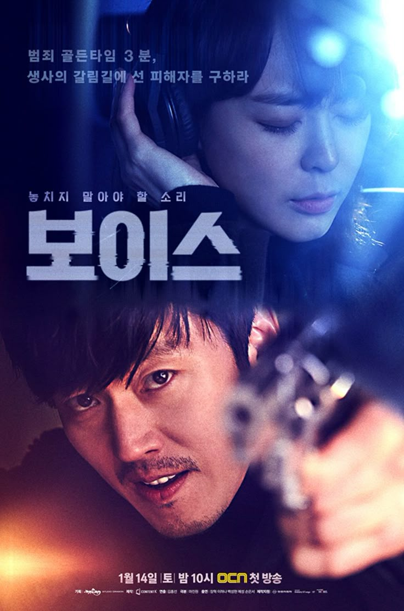

NETFLIX
.jpg)
running time 118 min
directed by Yeon Sang-ho
produced by Lee Dong-bin
starring Gong Yoo, Jung Yu-mi, Ma Dong-seok
Seorang ayah dan putrinya terjebak dalam kereta menuju Busan saat wabah zombie menyebar di Korea. Mereka berjuang untuk bertahan hidup bersama penumpang lainnya.

running time 9 episodes
directed by Hwang Dong-hyuk
produced by Kim Ji-yeon
starring Lee Jung-jae, Park Hae-soo, Wi Ha-joon
Ratusan peserta yang terlilit hutang menerima undangan aneh untuk bersaing dalam permainan anak-anak. Taruhannya mematikan.

running time 12 episodes
directed by Lee Jae-kyoo, Kim Nam-su
produced by Film Monster, JTBC Studios
starring Park Ji-hu, Yoon Chan-young, Cho Yi-hyun
Sekelompok siswa terjebak di sekolah menengah mereka saat wabah virus zombie menyebar dengan cepat.

running time 10 episodes
directed by Shin Yong-hui
produced by Joo Won-gyu
starring Shin Hyun-soo, Lee Soon-won, Im Se-mi
Siswa sekolah menengah harus mengikuti pelatihan militer untuk melawan makhluk asing misterius yang tiba-tiba menyerang bumi.

running time 12 episodes
directed by Kim Yoo-jin
produced by Studio S
starring Shin Ye-eun, Lomon, Seo Ji-hoon
Setelah saudaranya meninggal misterius, seorang siswi pindah ke sekolah yang sama untuk mengungkap kebenaran di balik kematiannya.

running time 8 episodes
directed by Yoo Soo-min
produced by Netflix
starring Park Ji-hoon, Choi Hyun-wook, Hong Kyung
Seorang siswa cerdas tapi lemah menggunakan otaknya untuk melawan para pengganggu di sekolah.

running time 12 episodes
directed by Lim Dae-woong
produced by Studio X+U, Studio Vplus
starring Lee Jae-in, Kim Woo-seok, Choi Ye-bin
Sekelompok siswa sekolah menengah terjebak dalam permainan mafia hidup atau mati yang misterius saat retret sekolah mereka.

running time 16 episodes
directed by Sung Yong-il
produced by JTBC Studios, Studio Dragon
starring Yoon Kyun-sang, Geum Sae-rok, Choi Yu-hwa
Seorang pengacara yang reputasinya hancur menyusup ke sekolah menengah elit sebagai guru sementara untuk mengungkap kebenaran di balik pembunuhan di sekolah tersebut.

running time 2 seasons
directed by Park Jin-woo, Lee Dan
produced by Studio S, Group 8
starring Lee Je-hoon, Kim Eui-sung, Pyo Ye-jin
Sebuah perusahaan taksi misterius menawarkan layanan balas dendam kepada korban yang tidak mendapatkan keadilan dari hukum.

running time 4 seasons
directed by Kim Hong-sun (S1), Lee Seung-young (S2), Nam Ki-hoon (S3), Shin Yong-hwi (S4)
produced by Studio Dragon, KeyEast
starring Lee Ha-na, Jang Hyuk (S1), Lee Jin-wook (S2-S3), Song Seung-heon (S4)
Seorang profiler suara dan detektif bekerja sama di pusat panggilan darurat 112 untuk melacak penjahat menggunakan suara sebagai petunjuk utama.

running time 3 seasons
directed by Joo Dong-min
produced by Chorokbaem Media
starring Lee Ji-ah, Kim So-yeon, Eugene
Ambisi, keserakahan, dan balas dendam menguasai penghuni apartemen mewah di Gangnam.

running time 140 min
directed by Han Jae-rim
produced by Han Jae-rim
starring Song Kang-ho, Lee Byung-hun, Jeon Do-yeon
Saat teroris menyebarkan virus di pesawat, pilot dan penumpang harus menghadapi keputusan hidup atau mati di ketinggian 30.000 kaki.